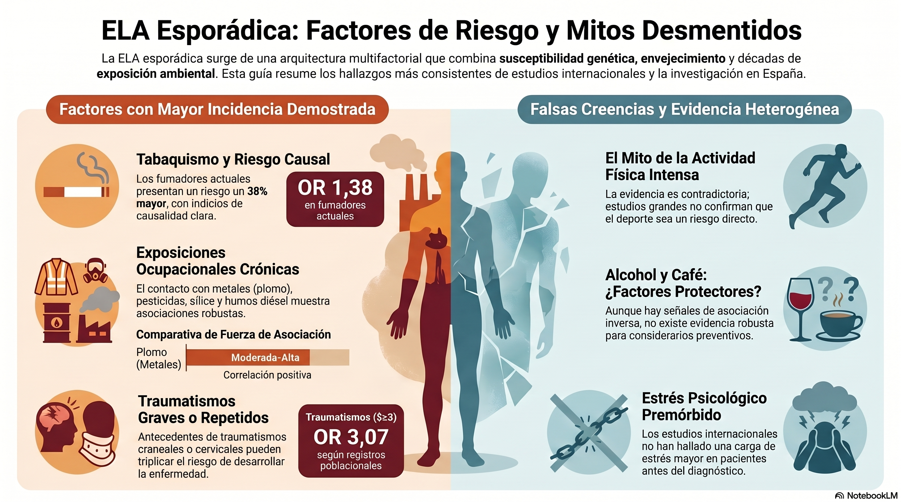
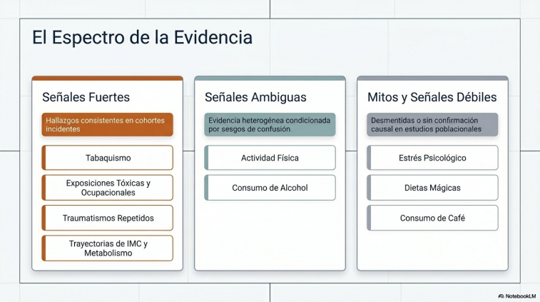
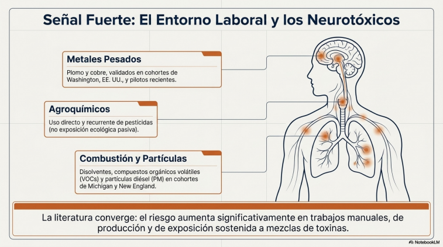
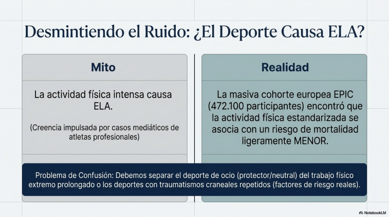
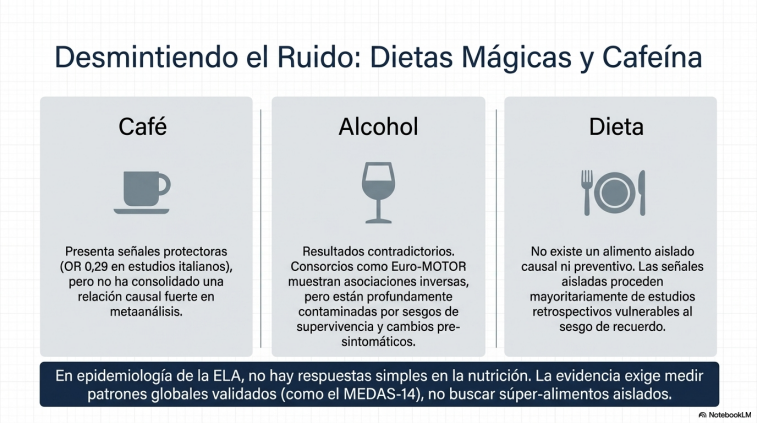
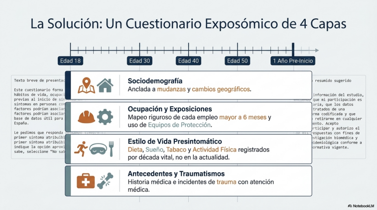
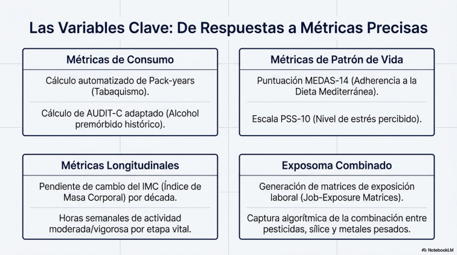

1. Señales fuertes
- Tabaquismo
- Metales, pesticidas, sílice, combustión y disolventes
- Traumatismos graves o repetidos
- Metabolismo e IMC premórbido
Exposoma, hábitos y riesgo
Una lectura clara de lo que sabemos - y de lo que todavía no sabemos - sobre tabaco, exposiciones laborales, metales, pesticidas, traumatismos, actividad física, estrés, dieta, café y alcohol antes del inicio de la enfermedad.
La ELA esporádica no se explica por un único hábito ni por una causa ambiental aislada. La lectura más sólida es multifactorial: edad, susceptibilidad genética, metabolismo, ocupación, exposiciones ambientales y sucesos vitales se combinan durante años o décadas.
Por eso conviene hablar de señales de asociación, no de certezas individuales: un factor puede aumentar el riesgo en estudios poblacionales sin permitir predecir qué persona concreta desarrollará ELA.
Esta síntesis visual separa los factores con asociación más consistente de las señales todavía heterogéneas y de las creencias que los estudios no han confirmado como causas demostradas.


Acceso directo al material audiovisual asociado a esta página sobre exposoma, factores de riesgo y ELA esporádica.
Estos bloques no son una sentencia causal para cada paciente, pero sí concentran las señales más repetidas en estudios observacionales mejor diseñados.
El tabaco aparece de forma consistente como factor asociado. La lectura más útil no es "fumador sí/no", sino edad de inicio, años de consumo, paquetes-año y abandono previo.
La evidencia converge mejor cuando se estudian exposiciones laborales concretas y repetidas: agricultura, industria, pinturas, combustión, polvo mineral, metales pesados y mezclas de tóxicos.
Los datos más sugerentes aparecen cuando se registran varios traumatismos, gravedad, atención médica, pérdida de conciencia y distancia temporal respecto al inicio de síntomas.
Algunos estudios apuntan a trayectorias metabólicas diferentes antes del diagnóstico. No basta una cifra aislada: interesa reconstruir peso, IMC y cambios por décadas.


| Factor | Lectura práctica | Cómo medirlo | Cautela |
|---|---|---|---|
| Tabaco | Asociación consistente en estudios poblacionales. | Nunca, exfumador, fumador; edad de inicio y fin; cigarrillos/día; paquetes-año. | Separar consumo actual de historia acumulada y de cambios por enfermedad incipiente. |
| Exposición laboral | La señal mejora cuando se estudian tareas y mezclas, no solo profesión declarada. | Historia laboral completa, sector, tareas, sustancias, frecuencia, años y equipos de protección. | Evitar conclusiones por cargo genérico: "agricultor" o "pintor" no explican la exposición real. |
| Metales y partículas | Plomo y otros metales aparecen repetidamente, con biomarcadores como apoyo futuro. | Trabajo, residencia, hobbies, combustión, soldadura, munición, agua, biomarcadores si es posible. | Un biomarcador tras el diagnóstico no siempre reconstruye exposición de décadas previas. |
| Traumatismos | La repetición y gravedad pueden asociarse a mayor riesgo en algunos estudios. | Número, edad, tipo, pérdida de conocimiento, atención médica, fracturas, deporte o trabajo relacionado. | El recuerdo puede ser desigual; conviene anclarlo a edades y eventos biográficos. |
Algunos hábitos deben medirse porque pueden modular riesgo o confundir otros análisis, pero no deben explicarse como causas demostradas de ELA esporádica.
La señal es heterogénea. En algunos trabajos aparece asociación; en otros no. Hay que separar deporte recreativo, competición, actividad laboral, traumatismos y perfil metabólico.
Existen señales inversas en algunos estudios, pero no una conclusión causal robusta. Deben recogerse con precisión, no venderse como protección ni como causa clara.
No hay un alimento aislado que explique el riesgo. Tiene más sentido medir patrón dietético global, adherencia mediterránea, peso e historia metabólica.
El estrés no emerge como factor fuerte comparable al tabaco o la ocupación, pero debe medirse porque puede relacionarse con sueño, alcohol, tabaco y actividad física.
No puede afirmarse así. La confusión suele venir de mezclar ejercicio, deporte profesional, traumatismos, ocupaciones físicamente exigentes y selección de personas con perfiles biológicos distintos.
Los estudios no lo sostienen como causa fuerte. Sí merece ser medido por su relación con otros hábitos y por su importancia en la experiencia vital de pacientes y familias.
Puede haber señales parciales, pero no una recomendación preventiva sólida. La prudencia es medir patrones, no convertir correlaciones débiles en consejos.
Los estudios geográficos generan hipótesis, pero no sustituyen una historia residencial y laboral detallada. El mapa no es la dosis de cada persona.


La evidencia española disponible es útil, pero todavía fragmentaria: estudios ecológicos o espaciales sobre plaguicidas, plomo ambiental y distribución geográfica; un piloto clínico-sociodemográfico; y biomarcadores de metales en muestras pequeñas. Falta un estudio nacional incidente, multicéntrico, con controles poblacionales y cuestionario exposómico armonizado.
La lección práctica es directa: España no necesita solo más titulares sobre "posibles causas". Necesita infraestructura epidemiológica: recoger bien exposiciones, residencia, trabajo, hábitos, traumatismos, genética disponible y biomarcadores.
La propuesta más sólida no es preguntar solo por hábitos. Un cuestionario útil debe reconstruir biografía, trabajo, ambiente y salud antes de los primeros síntomas, con anclajes temporales para reducir sesgo de recuerdo.
Infancia, mudanzas, nivel educativo, zona rural o urbana, códigos postales y periodos vitales.
Empleos de más de seis meses, tareas reales, sustancias, frecuencia, duración y protección.
Tabaco, alcohol, café, dieta, actividad física, sueño y estrés antes del inicio de síntomas.
Golpes, fracturas, pérdida de conciencia, descargas eléctricas, servicio militar y hobbies.
Paquetes-año, AUDIT-C, MEDAS-14, PSS-10, horas de actividad e IMC por década.
La pregunta clave puede no ser un tóxico aislado, sino la mezcla y acumulación de exposiciones.


Esta página resume evidencia observacional y material de trabajo. No establece causas individuales ni sustituye evaluación médica, genética, laboral o epidemiológica formal.